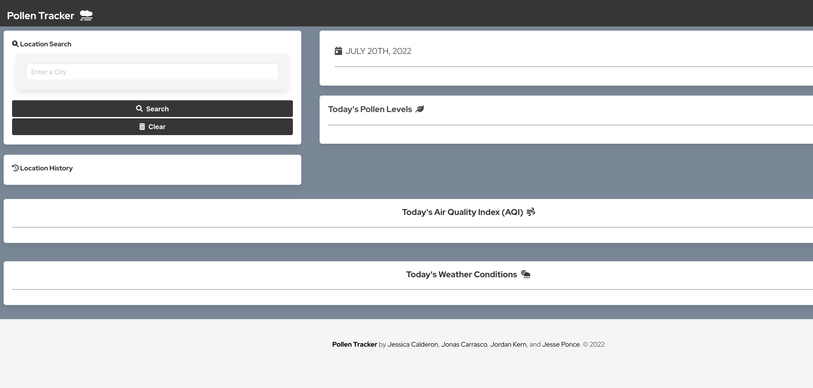

A quick preview...
For your viewing pleasure - a brief teaser of my latest and greatest works. Click these buttons to see more 👇


I'm a San Antonio-based aspiring developer. Currently, I'm a full-stack programming student in UTSA's fast-paced 6 month bootcamp. As an MBA, I'm well-rounded in the business of technology and dedicated to continuous learning. I'm a 3D printing hobbyist and enthusiast. I love to build things, both physically and digitally. Want to join me on journey?! Check out my WordPress blog!
PortfolioMy BlogFor your viewing pleasure - a brief teaser of my latest and greatest works. Click these buttons to see more 👇